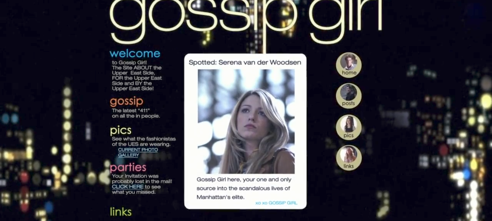
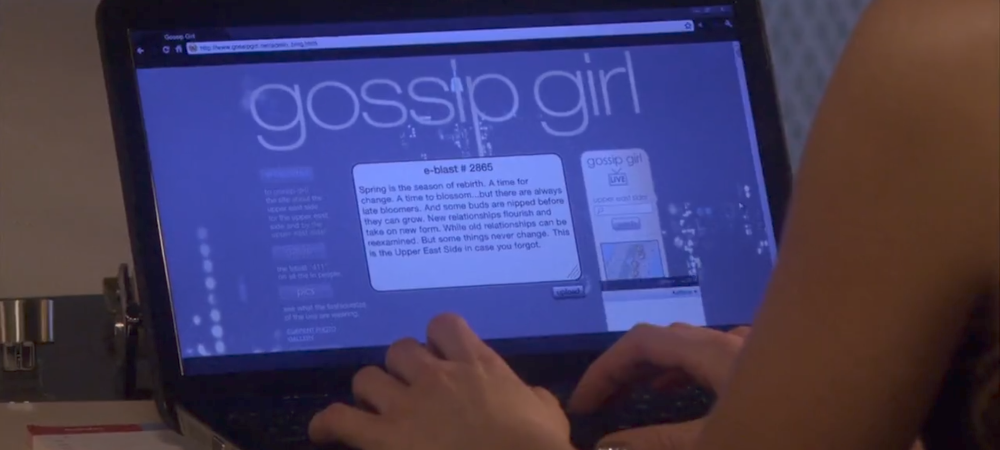

Bem vindo ao Gossip Girl ou Garota do Blog, aqui temos o objetivo de trazer as fofocas e novidades dos atores que fizeram os personagens na série Gossip Girl.
Além de te ajudar a estar informado ou informada sobre a Elite de Manhattan, com seus podres, fofocas, festas, fotos, etc. Também te fornecemos um lugar para você interessado em saber e buscar assim como eu, pessoalmente, onde nossos queridinhos de Manhattan estão.
Desenvolvimento do Blog
Com todas essas gírias, codinomes e nomes a parte. Esse site e blog foi criado baseado e inspirado no Blog contido na série Gossip Girl. No qual fala sobre a vida alheia dos personagens da série, em que muitos são considerados de uma tal Elite na cidade de Manhattan em Nova Iorque.
Tendo como bases as seguintes imagens do blog (adquiridas na série):


Gossip Girl a Série
Gossip Girl é uma série de televisão norte-americana de drama adolescente, baseada na série literária homônima da escritora Cecily von Ziegesar. Criada por Josh Schwartz e Stephanie Savage, a série foi originalmente transmitida nos Estados Unidos pela rede de televisão The CW de 19 de setembro de 2007 e 17 de dezembro de 2012, totalizando seis temporadas e 121 episódios. No Brasil, Gossip Girl teve sua estreia em 8 de novembro de 2007 no canal de televisão por assinatura Warner Channel, onde foi exibida até abril de 2010. Em seguida, foi transmitida pelo SBT e pelo Glitz*. Em Portugal, a série foi ao ar no extinto Canal Sony e está no ar no canal Biggs.
A série, sobre jovens estudantes das escolas de elite no Upper East Side de Manhattan em Nova York, segue quando Serena van der Woodsen (Blake Lively) retorna à cidade após ter ficado seis meses fora em um internato e se mantido fora do alcance de amigos e conhecidos. Os acontecimentos e histórias de cada personagem são narrados em um site por uma blogueira anônima (voz por Kristen Bell), que atende pelo pseudônimo "Gossip Girl" (Garota Fofoqueira, em português). Gossip Girl narra os escândalos de Serena e seus amigos desde a oitava série de Serena, quando a garota ficou com seu vestido branco todo molhado dentro de um avião na viagem de excursão da escola.
Desde então, Serena virou a vitima preferida de Gossip Girl. Magoada pelo fato de Serena não ter dado nenhuma noticia e ainda por ter passado por gravíssimos problemas familiares sozinha, Blair Waldorf (Leighton Meester) começa excluindo socialmente a melhor amiga e mantendo distância de Serena, como punição pela total perda de contato durante sua ausência. Envolvidos na trama temos também Nate Archibald (Chace Crawford) e seu amigo de infância, Chuck Bass (Ed Westwick), e os irmãos até então "apagados" Dan Humphrey (Penn Badgley) e Jenny Humphrey (Taylor Momsen), além da amiga de infância de Dan, Vanessa Abrams (Jessica Szohr). Fazendo parte da trama há também o irmão de Serena, Erik (Connor Paolo), sua mãe Lily van der Woodsen (Kelly Rutherford) e Rufus Humphrey (Matthew Settle), separado de sua esposa Alison (Susan Misner), pais de Dan e Jenny e uma impostora, Ivy Dickens (Kaylee DeFer) que se passa pela prima de Serena (Esta ingressa na série na quarta temporada e se torna personagem principal na quinta temporada). A partir da quinta temporada Jenny Humphrey (Taylor Momsen) e Vanessa Abrams (Jessica Szohr) saem do elenco do seriado, porém fazem algumas participações especiais.
Desenvolvo sites em HTML customizados. Com design atraente, funcionalidades avançadas e alta performance, e garanto uma presença online de destaque para o seu negócio.
Trabalho com uma linha de criação e estratégia adaptada para o perfil de cada cliente.